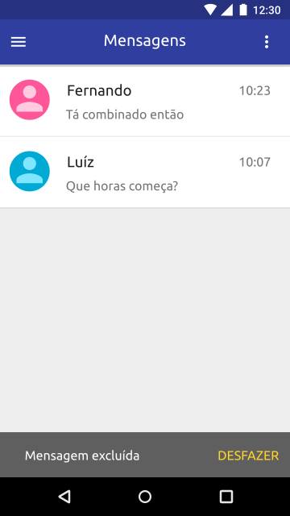
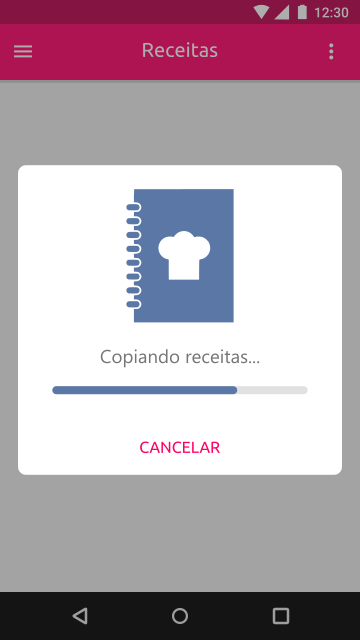

Permita ao usuário desfazer e refazer suas ações.

A ação "desfazer" permite o usuário recuperar a mensagem excluída.
Forneça "saídas de emergência" visualmente claras para deixar estados indesejados. Torne fácil cancelar operações, mesmo quando elas já estão em andamento.

O botão "cancelar" permite o usuário cancelar o processo de copiar receitas que está em andamento.